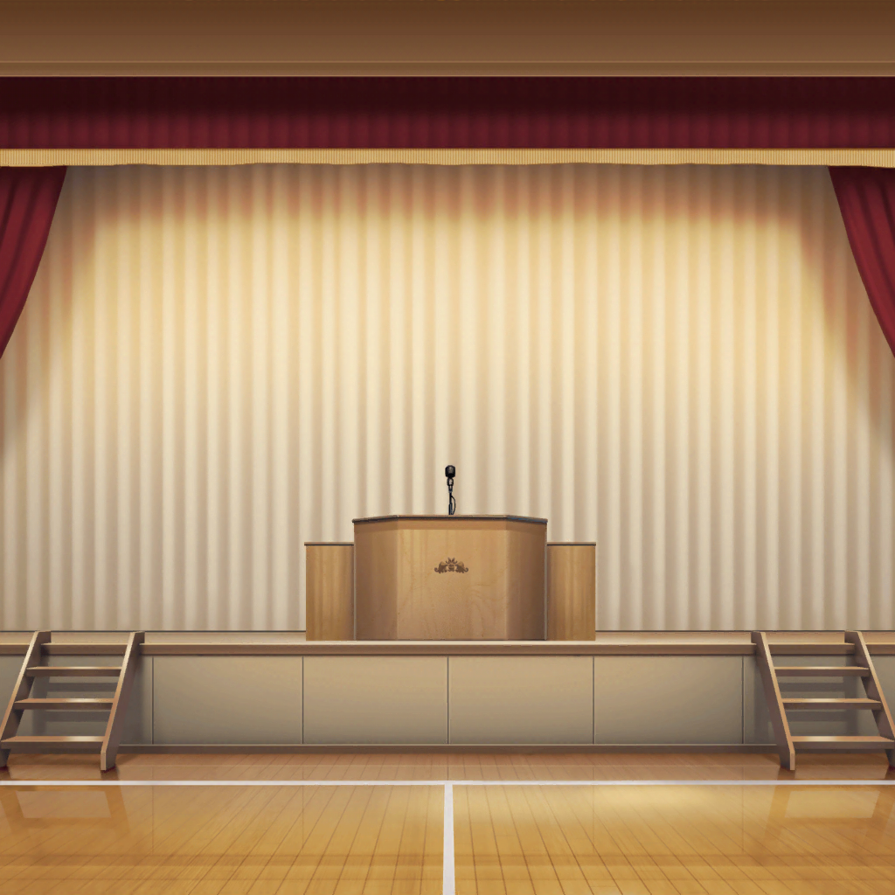

羽丘女子学園 体育館
ミッシェル
はぁ、疲れた……
ミッシェル
……でも、なんとか無事に、
ミュージカルが終わってよかった
ミッシェル
……っと、まだミッシェル脱いだらダメなんだった。
今のうちに、はぐみとこころを探さないと
ミッシェル
どこにいるんだろう……
まだ帰ってないといいけど……
ミッシェル
……ん？
向こうから走ってくるのは……
こころ・はぐみ
ミッシェル～！
ミッシェル
わ、わあ〜、こころ！ はぐみ〜！
こころ
ミッシェル、お疲れ様！
とっても素晴らしい舞台だったわ！
はぐみ
うん、すっごく楽しい舞台だったよ！
ミッシェルも、とってもかっこよかった！
こころ
どうしても、すぐに感想を伝えたかったから
はぐみと２人で、ミッシェルに会いに来たのよ！
ミッシェル
あ、あはは、ありがとう。
実はね、ミッシェルもこころ達に会いたかったんだ！
こころ
まあ！ そうなのね！
ミッシェル
バレンタインは、チョコレートくれてありがとね。
はい、ミッシェルから、２人にホワイトデーのお返しだよ〜
はぐみ
わぁ～！
ありがとう、ミッシェル！
こころ
ありがとう、とっても嬉しいわ！
これは……クッキーね！
はぐみ
わーい、かわいいっ！
食べるのがもったいないくらいだよ～！
ミッシェル
喜んでもらえて嬉しいよ〜
食べたら、美味しかったかどうか教えてね
こころ
もちろんよ！
ちゃんと感想を……って、あ！
ミッシェル！！
こころ
あたしがバレンタインデーにあげた、
チョコレートの感想を聞いていないわ！
はぐみ
あ！ はぐみもはぐみも！
おいしかったか、聞いてないよ！
ミッシェル
（そっか、そういえば最近ミッシェルとしては
メンバーに会ってなかったっけ）
はぐみ
どうだった、どうだった！？
ミッシェル
えっと……はぐみのチョコ、すっごく美味しかったよ！
はぐみ
わーい！ よかったー！
ありがとうー！
ミッシェル
それから、こころのチョコは……
ミッシェル
（こころのくれたチョコ、
なんか硬くて苦かったんだよね……でも……）
こころ
あたしのはどうだったの、ミッシェル！
ミッシェル
……え、えーと……
こころのは、その……大人な味だったかな！
う、うん！ すごく、大人だったよ！
こころ
大人な味！ とってもステキな響きね！
喜んでもらえてよかったわ！
ミッシェル
で、でも、ミッシェルは、
もうちょっと甘い方が好きかな～？
はぐみ
甘い方が好きなの？
じゃあ、来年は、もっと甘いチョコにするね！
こころ
あたしも、甘くて大人な味のチョコレートを作るわ！
ミッシェル
あ、ありがとう……
楽しみにしてるね……
はぐみ
ミッシェルからのお返しも、楽しみにしてるね！
はぐみ、来年もクッキーがいいな……って、あれ？
はぐみ
こころん！ ミッシェルがくれたクッキー、見て！
これ……手作りみたいだよ！ すごーい！
こころ
まあ！ 本当だわ！
ミッシェル、あたし達のために作ってくれたのね！
とっても嬉しいわ！！
ミッシェル
い、いや別にそんな、たいしたものじゃないんだけど……
こころ
だって、ミッシェルの手作りよ！
こんなに素晴らしいことがあるかしら！
薫と花音にも、見せてあげなくっちゃ！
はぐみ
はぐみも行く！
それじゃ、またねーミッシェル！
クッキーありがとう！
ミッシェル
あ、うん……どういたしまして……
ミッシェル
行っちゃった。
なんか……思ったより、すごい喜んでもらえたな……
花音
よかったね、美咲ちゃん
ミッシェル
わっ！？
……あ、花音さん
花音
ステージお疲れ様でした、美咲ちゃん。
とっても楽しかったよ
ミッシェル
ありがと、花音さん。
……もしかして、さっきの見てた？
花音
うん。
……ふふ、美咲ちゃん、
ホワイトデーのお返し、手作りしたんだね
ミッシェル
……ま、まあね……
こころとはぐみも、手作りだったから
ミッシェル
あ、そうだ。
花音さんにも、はい
花音
はい、って……このクッキー、私にも？
ミッシェル
うん。だって、花音さんもバレンタインにくれたでしょ。
だからお返し。ありがとう
花音
わぁ……っ！ 美咲ちゃん、ありがとう！
手作りクッキーなんて、すっごく嬉しいよ
ミッシェル
実は、さ。バレンタインには貰ってないんだけど
薫さんの分も作ってきたんだよね
ミッシェル
なんか……ミッシェルだったら、
みんなに作ってくるかなって、思って
ミッシェル
……って、なんであたし、
ミッシェルの気持ちでお菓子作ってるんだろ……
花音
ふふっ。それって、本当にミッシェルの気持ち？
ミッシェル
えっとー……うーん、どうかな。
もしかしたら、あたしの気持ちも入ってるかもしれないですねー
花音
うん。そうだったら私、もっともっと嬉しいな